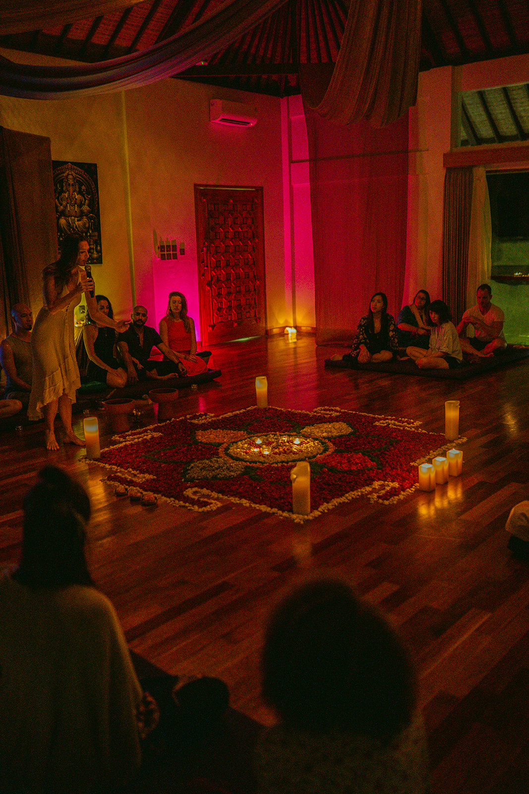

'
data-cta-text="Join the Retreat"
data-cta-link="../events/"
data-section-class="mood-night-temple"
>
'
data-cta-text="Join the Retreat"
data-cta-link="../events/"
data-section-class="mood-night-temple"
>Held in the embrace of nature, the Sacred Feminine Embodiment Retreat™ is a ceremonial container: intimate, potent, and deeply held. This is a space where women soften out of armoring and into truth. Where eros is welcomed as intelligence. Where archetypal power lands in the body before the mind has language for it.
View upcoming retreat dates and book your spot on our events page. If four days feels like a lot for a first step, the Sacred Feminine Embodiment Temple™ in Amsterdam is the gentler door.
'
data-cta-text="Join the Retreat"
data-cta-link="../events/"
data-section-class="mood-night-temple"
>Map of Becoming
Sovereignty · Boundaries

Instinct · Untamed Truth
Womb Wisdom · Creation

Devotion · Courage

Erotic Innocence · Beauty

Intuition · Ritual Gnosis
The Practical Truth
Four days at Meeuwenveen, in the woods of Drenthe. Meeuwenveenweg 1-3, 7971 PK Havelte, around two hours from Amsterdam.
Thursday 8 October 2026, 19:00, through Sunday 11 October 2026, 17:00.
Your bed, your meals, and every session are included. You arrive Thursday, and until Sunday you don't have to think about a single thing outside these walls.
€1,222. The €1,111 early bird has sold out. Reserve your place with a €350 deposit, with the rest due before the retreat. Payment plans are available, and I would rather you ask than assume you cannot come.
You haven't lost your energy. You've lost the thread back to yourself. Four days is enough to find it again.
This is where you meet the woman you avoided, and the woman you have always longed to be. Come home to yourself, to your sisters, and to Life, more fully and more deeply than an ordinary week allows. And if you want to feel the field first, the monthly tantrik temple nights in Amsterdam are open to you.